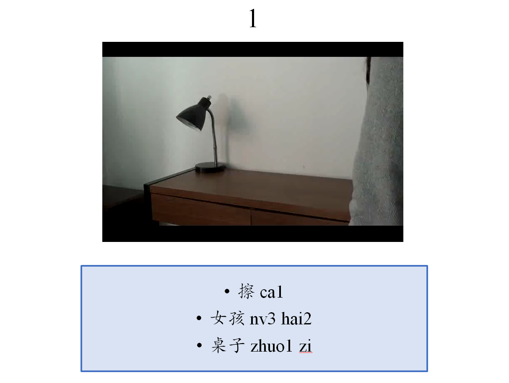

Instruction:
Watch the short video clip. How would you best express the meaning in one full sentence with 把? Be sure to use all given words in the box. Please speak loudly and clearly into the microphone.
That is to say, you should make one sentence, and the sentence must have 把 and all words in the box. For item 1, for example, you should make one sentence with 把，擦(ca1)，女孩(nv3 hai2)，桌子(zhuo1 zi). Note that the given words in the box are not pre-arranged, so you should arrange them in an order that you think is correct. Also, sometimes it is necessary to add other words to make the sentence correct.
